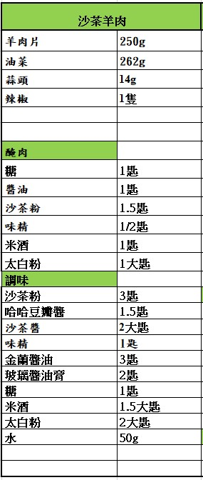
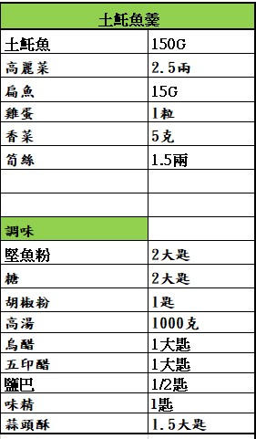
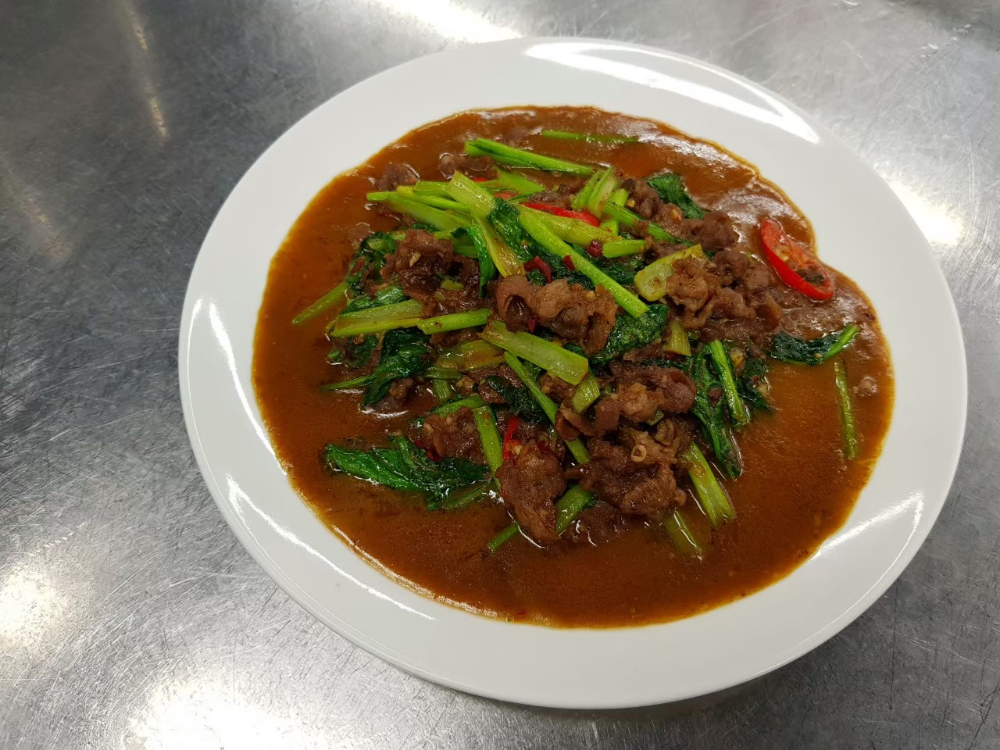
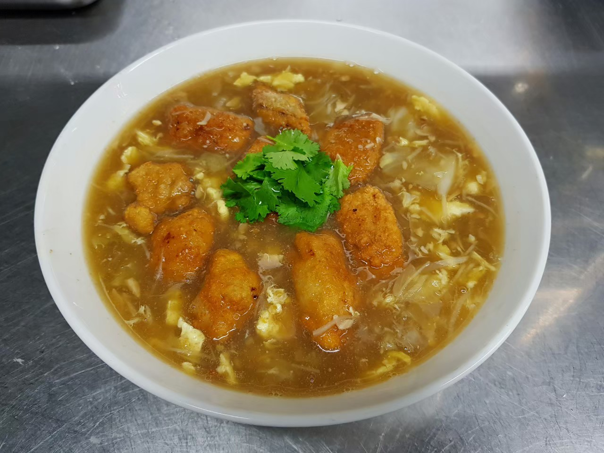

| 成品照 | 菜名 | 作法 |
|---|---|---|
|  | 沙茶羊肉 |
油菜切段辣椒切辣椒切片蒜切末羊肉醃漬拌勻分散加1T水下太白粉 潤鍋熱鍋油少許炒香羊肉下蒜頭辣椒炒香下調味料先下梗再下葉起鍋前下1t香油 |
|  | 土魠魚羹 |
土魠魚去皮去骨斜刀厚片1T米酒1/2t蒜香粉1/4t五香粉1t醬油1.5t糖1/4t味精1/4t胡椒少許鹽拌勻下魚醃輕輕拌下1t蛋液放旁邊靜置 高麗菜切小片川燙瀝乾筍絲加醋川燙土魠魚炸前加少許蛋液太白粉沾地瓜粉反潮後在拌一次土魠魚泡2min泡熟再開大火逼油炸酥 高湯滾下扁魚粉類調味料筍絲勾芡加高麗菜拌勻加入蛋液等蛋液定型後撥散下醋稍微煮過讓酸味揮發道出放上炸好的土魠魚 |